GraftM Analysis
2021-04-05
Chapter 1 GraftM Analysis
GraftM was used to make taxonomic classification of 14 metagenomes from danish WWTP. A custom GraftM package was created, using the MIDAS 3.7 database to search for 16S rRNA genes. GraftM classifies reads using an hmm search, and subsequently assigns taxonomy by placing the reads into a prebuild phylogenetic tree. The metagenomes used in this study are described in Table ??
metadata = read_excel("/srv/MA/Projects/microflora_danica/analysis/projects/MFD_seges/data/WWTP_sequences/2021-02-09_WWTP_metadata.xlsx")
metadata_filtered = metadata %>% filter(Classifier == "GraftM", Database == "MIDAS")
print(metadata_filtered[,c(-1,-2,-3)])## # A tibble: 14 x 8
## Plant Configuration Design ReturnSludgeSidestr… PrimarySetling Digester
## <chr> <chr> <chr> <chr> <chr> <chr>
## 1 Aalborg_Ea… Alternating EBPR YES NO YES
## 2 Aalborg_W Alternating EBPR YES YES YES
## 3 Avedøre Alternating EBPR NO NO YES
## 4 Bjergmarken Alternating EBPR NO NO YES
## 5 Damhusåen Alternating EBPR NO YES YES
## 6 Egå Recirculation EBPR YES NO NO
## 7 Ejby Mølle Alternating EBPR NO YES YES
## 8 Esbjerg_E Recirculation BNR NO YES YES
## 9 Esbjerg_W Recirculation BNR NO YES YES
## 10 Fredericia Recirculation EBPR NO NO YES
## 11 Haderslev Alternating EBPR YES NO NO
## 12 Hirtshals Alternating EBPR NO NO NO
## 13 Hjørring Recirculation EBPR NO YES YES
## 14 Kalundborg Alternating BNR NO NO NO
## # … with 2 more variables: lib_conc(ng/µl) <dbl>, extrac_conc(ng/µl) <dbl>GraftM extracts reads and assigns these a taxonomic classification. To evaluate this,a comparison between reads extracted and reads classified were made:
stats_graftm = stats_graftm %>% arrange(Plant)
wwtp_plants = stats_graftm$Plant
reads_classified = stats_graftm$Reads
reads_extracted = c(8317, 7455, 5830, 6889, 7916, 7668, 6527, 6866, 6964, 7950, 7292, 7194, 6247, 7705)
metagenome_size = c(17056633, 16547260, 14846304, 15870938, 19764160, 16805544, 15488718, 16159208, 17137236, 19515615, 15127001, 17891614, 15305860, 20471072)
graftm_reads_comp = data.frame(reads_extracted, reads_classified, metagenome_size)
graftm_reads_comp = graftm_reads_comp %>% mutate(rRNA_per_genome = reads_extracted / (metagenome_size / (3500000/1550)))
graftm_reads_comp = graftm_reads_comp %>% mutate(reads_unclassified = reads_extracted - reads_classified)
graftm_reads_comp = graftm_reads_comp[,c(1,2,5,3,4)]
graftm_reads_comp$rRNA_per_genome = round(graftm_reads_comp$rRNA_per_genome, 2)
colnames(graftm_reads_comp) = c("Extracted Reads", "Classified Reads","Unclassified Reads" ,"Metagenome Size (Reads)", "Theoretical 16S rRNA per genome")
rownames(graftm_reads_comp) = stats_graftm$Plant
print(graftm_reads_comp)## Extracted Reads Classified Reads Unclassified Reads
## Aalborg_East 8317 5801 2516
## Aalborg_W 7455 5801 1654
## Avedøre 5830 5801 29
## Bjergmarken 6889 5801 1088
## Damhusåen 7916 5801 2115
## Egå 7668 5801 1867
## Ejby Mølle 6527 5801 726
## Esbjerg_E 6866 5801 1065
## Esbjerg_W 6964 5801 1163
## Fredericia 7950 5801 2149
## Haderslev 7292 5801 1491
## Hirtshals 7194 5801 1393
## Hjørring 6247 5801 446
## Kalundborg 7705 5801 1904
## Metagenome Size (Reads) Theoretical 16S rRNA per genome
## Aalborg_East 17056633 1.10
## Aalborg_W 16547260 1.02
## Avedøre 14846304 0.89
## Bjergmarken 15870938 0.98
## Damhusåen 19764160 0.90
## Egå 16805544 1.03
## Ejby Mølle 15488718 0.95
## Esbjerg_E 16159208 0.96
## Esbjerg_W 17137236 0.92
## Fredericia 19515615 0.92
## Haderslev 15127001 1.09
## Hirtshals 17891614 0.91
## Hjørring 15305860 0.92
## Kalundborg 20471072 0.85While the average bacterial genomes contains 4.2 rRNA genes, it seems that GraftM might not extract all 16S rRNA genes from the metagenomes. This hypothesis sits under the assumption that all reads in the metagenome are equally distributed throughout the bacterial genome.
We rarefied the samples to 5801 (The samples with the lowest ammount of reads) to investigate how the taxonomic classification was distributed over different taxonomic ranks:
amp_rarecurve(graftm_ampvis, color_by = "Plant", stepsize = 200) +
geom_vline(xintercept=5800, color = "darkred", lty = 2) +
xlim(0,60000) +
ylim(0,2500) +
labs(title = "GraftM")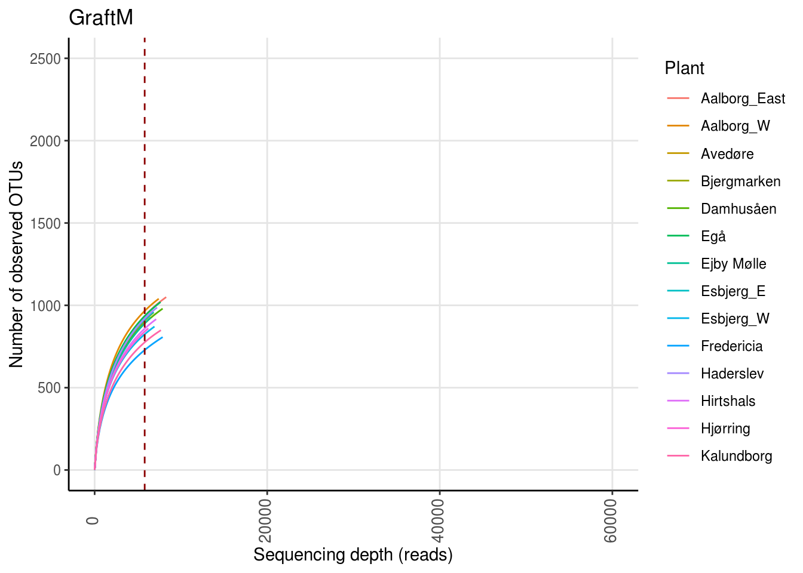
amp_rarecurve(graftm_ampvis_rarefied, color_by = "Plant", stepsize = 200) +
xlim(0,6000) +
ylim(0,1200) +
labs(title = "GraftM")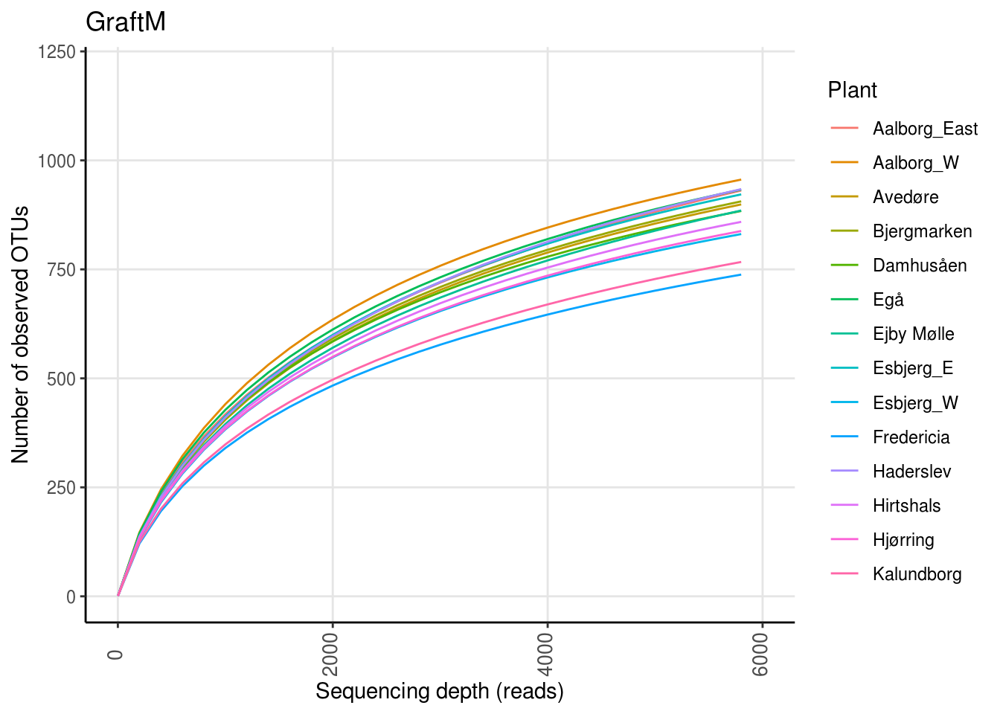
amp_export_otutable(graftm_ampvis_rarefied, "/srv/MA/Projects/microflora_danica/analysis/projects/MFD_seges/results/WWTP_sequences/graftM/01_midas_combined_count/ampvis_otu/graftm_midas_otu_rarefied")
graftm_otu_rarefied = read.csv("/srv/MA/Projects/microflora_danica/analysis/projects/MFD_seges/results/WWTP_sequences/graftM/01_midas_combined_count/ampvis_otu/graftm_midas_otu_rarefied.csv", sep = "\t")
graftm_phylums = graftm_otu_rarefied %>%
group_by(Phylum) %>%
count() %>%
arrange(desc(n))
graftm_class = graftm_otu_rarefied %>%
group_by(Class) %>%
count() %>%
arrange(desc(n))
graftm_order = graftm_otu_rarefied %>%
group_by(Order) %>%
count() %>%
arrange(desc(n))
graftm_family = graftm_otu_rarefied %>%
group_by(Family) %>%
count() %>%
arrange(desc(n))
graftm_genus = graftm_otu_rarefied %>%
group_by(Genus) %>%
count() %>%
arrange(desc(n))
graftm_species = graftm_otu_rarefied %>%
group_by(Species) %>%
count() %>%
arrange(desc(n))
graftm_nrow = c(length(graftm_phylums$n)-1, length(graftm_class$n)-1, length(graftm_order$n)-1, length(graftm_family$n)-1, length(graftm_genus$n)-1, length(graftm_species$n)-1)
taxonomic_levels = c("Phylum","Class","Order","Family","Genus","Species")
graftm_nrow_df = data.frame(taxonomic_levels, graftm_nrow)
graftm_nrow_df$taxonomic_levels = factor(graftm_nrow_df$taxonomic_levels, ordered = TRUE, levels = c("Phylum","Class","Order","Family","Genus","Species"))
graftm_nrow_df_new = t(graftm_nrow_df)
graftm_nrow_df_new = as.data.frame(graftm_nrow_df_new)
colnames(graftm_nrow_df_new) = taxonomic_levels
graftm_nrow_df_new = graftm_nrow_df_new[-1,]
print(graftm_nrow_df_new)## Phylum Class Order Family Genus Species
## graftm_nrow 33 73 180 365 765 8691.1 Amplicon compared to GraftM
Rarefraction of amplicon samples:
amp_rarecurve(amplicon_ampvis, color_by = "Plant") +
geom_vline(xintercept=5800, color = "darkred", lty = 2) +
xlim(0,100000) +
ylim(0,2500) +
labs(title = "Amplicon")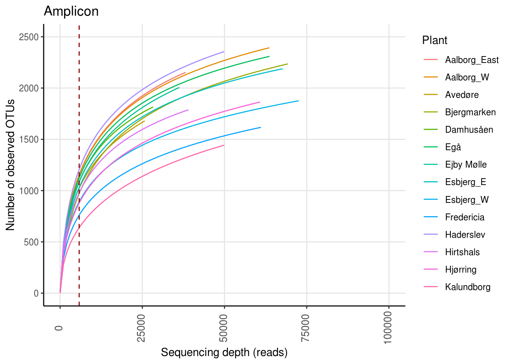
amp_rarecurve(amplicon_ampvis_rarefied, color_by = "Plant", stepsize = 200) +
xlim(0,10000) +
ylim(0,1200) +
labs(title = "Amplicon")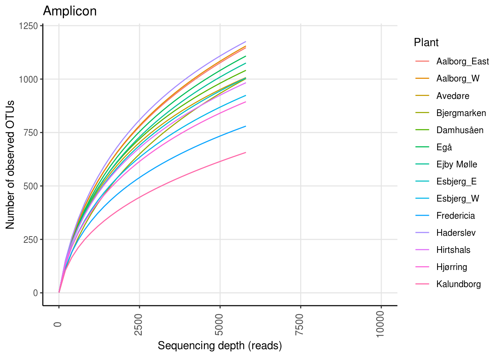
amp_export_otutable(amplicon_ampvis_rarefied, "/srv/MA/Projects/microflora_danica/analysis/projects/MFD_seges/results/WWTP_sequences/amplicon/ampvis_otu/amplicon_midas_otu_rarefied")
amplicon_otu_rarefied = read.csv("/srv/MA/Projects/microflora_danica/analysis/projects/MFD_seges/results/WWTP_sequences/amplicon/ampvis_otu/amplicon_midas_otu_rarefied.csv", sep = "\t")
amplicon_phylums = amplicon_otu_rarefied %>%
group_by(Phylum) %>%
count() %>%
arrange(desc(n))
amplicon_class = amplicon_otu_rarefied %>%
group_by(Class) %>%
count() %>%
arrange(desc(n))
amplicon_order = amplicon_otu_rarefied %>%
group_by(Order) %>%
count() %>%
arrange(desc(n))
amplicon_family = amplicon_otu_rarefied %>%
group_by(Family) %>%
count() %>%
arrange(desc(n))
amplicon_genus = amplicon_otu_rarefied %>%
group_by(Genus) %>%
count() %>%
arrange(desc(n))
amplicon_species = amplicon_otu_rarefied %>%
group_by(Species) %>%
count() %>%
arrange(desc(n))
amplicon_nrow = c(length(amplicon_phylums$n)-1, length(amplicon_class$n)-1, length(amplicon_order$n)-1, length(amplicon_family$n)-1, length(amplicon_genus$n)-1, length(amplicon_species$n)-1)
amplicon_nrow_df = data.frame(taxonomic_levels, amplicon_nrow)
amplicon_nrow_df$taxonomic_levels = factor(amplicon_nrow_df$taxonomic_levels, ordered = TRUE, levels = c("Phylum","Class","Order","Family","Genus","Species"))
amplicon_nrow_df_new = t(amplicon_nrow_df)
amplicon_nrow_df_new = as.data.frame(amplicon_nrow_df_new)
colnames(amplicon_nrow_df_new) = taxonomic_levels
amplicon_nrow_df_new = amplicon_nrow_df_new[-1,]
comparison_nrow = amplicon_nrow_df_new %>% full_join(graftm_nrow_df_new) ## Joining, by = c("Phylum", "Class", "Order", "Family", "Genus", "Species")rownames(comparison_nrow) = c("Amplicon", "GraftM")
print(comparison_nrow)## Phylum Class Order Family Genus Species
## Amplicon 35 77 180 394 1187 2523
## GraftM 33 73 180 365 765 869We also investigated the normalized total number of reads at each taxonomic classification.
graftm_otu_rarefied_sum = graftm_otu_rarefied %>% mutate(summed_reads = AalE_GraftM_Midas + AalW_GraftM_Midas + Aved_GraftM_Midas + Bjer_GraftM_Midas + Damh_GraftM_Midas + Ega_GraftM_Midas + Ejby_GraftM_Midas + EsbE_GraftM_Midas + EsbW_GraftM_Midas + Fred_GraftM_Midas + Hade_GraftM_Midas + Hirt_GraftM_Midas + Hjor_GraftM_Midas + Kalu_GraftM_Midas)
graftm_phylum_sum = aggregate(graftm_otu_rarefied_sum$summed_reads, by=list(Category=graftm_otu_rarefied_sum$Phylum), FUN=sum)
graftm_phylum_sum = graftm_phylum_sum[-1,]
graftm_class_sum = aggregate(graftm_otu_rarefied_sum$summed_reads, by=list(Category=graftm_otu_rarefied_sum$Class), FUN=sum)
graftm_class_sum = graftm_class_sum[-1,]
graftm_order_sum = aggregate(graftm_otu_rarefied_sum$summed_reads, by=list(Category=graftm_otu_rarefied_sum$Order), FUN=sum)
graftm_order_sum = graftm_order_sum[-1,]
graftm_family_sum = aggregate(graftm_otu_rarefied_sum$summed_reads, by=list(Category=graftm_otu_rarefied_sum$Family), FUN=sum)
graftm_family_sum = graftm_family_sum[-1,]
graftm_genus_sum = aggregate(graftm_otu_rarefied_sum$summed_reads, by=list(Category=graftm_otu_rarefied_sum$Genus), FUN=sum)
graftm_genus_sum = graftm_genus_sum[-1,]
graftm_species_sum = aggregate(graftm_otu_rarefied_sum$summed_reads, by=list(Category=graftm_otu_rarefied_sum$Species), FUN=sum)
graftm_species_sum = graftm_species_sum[-1,]
graftm_normalized = c(sum(graftm_phylum_sum$x)/sum(graftm_otu_rarefied_sum$summed_reads), sum(graftm_class_sum$x)/sum(graftm_otu_rarefied_sum$summed_reads), sum(graftm_order_sum$x)/sum(graftm_otu_rarefied_sum$summed_reads), sum(graftm_family_sum$x)/sum(graftm_otu_rarefied_sum$summed_reads), sum(graftm_genus_sum$x)/sum(graftm_otu_rarefied_sum$summed_reads), sum(graftm_species_sum$x)/sum(graftm_otu_rarefied_sum$summed_reads))
amplicon_otu_rarefied_sum = amplicon_otu_rarefied %>% mutate(summed_reads = AalE_Amplicon_Midas + AalW_Amplicon_Midas + Aved_Amplicon_Midas + Bjer_Amplicon_Midas + Damh_Amplicon_Midas + Ega_Amplicon_Midas + Ejby_Amplicon_Midas + EsbE_Amplicon_Midas + EsbW_Amplicon_Midas + Fred_Amplicon_Midas + Hade_Amplicon_Midas + Hirt_Amplicon_Midas + Hjor_Amplicon_Midas + Kalu_Amplicon_Midas)
amplicon_phylum_sum = aggregate(amplicon_otu_rarefied_sum$summed_reads, by=list(Category=amplicon_otu_rarefied_sum$Phylum), FUN=sum)
amplicon_phylum_sum = amplicon_phylum_sum[-1,]
amplicon_class_sum = aggregate(amplicon_otu_rarefied_sum$summed_reads, by=list(Category=amplicon_otu_rarefied_sum$Class), FUN=sum)
amplicon_class_sum = amplicon_class_sum[-1,]
amplicon_order_sum = aggregate(amplicon_otu_rarefied_sum$summed_reads, by=list(Category=amplicon_otu_rarefied_sum$Order), FUN=sum)
amplicon_order_sum = amplicon_order_sum[-1,]
amplicon_family_sum = aggregate(amplicon_otu_rarefied_sum$summed_reads, by=list(Category=amplicon_otu_rarefied_sum$Family), FUN=sum)
amplicon_family_sum = amplicon_family_sum[-1,]
amplicon_genus_sum = aggregate(amplicon_otu_rarefied_sum$summed_reads, by=list(Category=amplicon_otu_rarefied_sum$Genus), FUN=sum)
amplicon_genus_sum = amplicon_genus_sum[-1,]
amplicon_species_sum = aggregate(amplicon_otu_rarefied_sum$summed_reads, by=list(Category=amplicon_otu_rarefied_sum$Species), FUN=sum)
amplicon_species_sum = amplicon_species_sum[-1,]
amplicon_normalized = c(sum(amplicon_phylum_sum$x)/sum(amplicon_otu_rarefied_sum$summed_reads), sum(amplicon_class_sum$x)/sum(amplicon_otu_rarefied_sum$summed_reads), sum(amplicon_order_sum$x)/sum(amplicon_otu_rarefied_sum$summed_reads), sum(amplicon_family_sum$x)/sum(amplicon_otu_rarefied_sum$summed_reads), sum(amplicon_genus_sum$x)/sum(amplicon_otu_rarefied_sum$summed_reads), sum(amplicon_species_sum$x)/sum(amplicon_otu_rarefied_sum$summed_reads))
print(amplicon_normalized)## [1] 0.9806314 0.9706331 0.9598099 0.9438151 0.8991307 0.7661241normalized_readcount = data.frame(round(amplicon_normalized,2), round(graftm_normalized,2))
normalized_readcount = t(normalized_readcount)
normalized_readcount = as.data.frame(normalized_readcount)
rownames(normalized_readcount) = c("Amplicon", "GraftM")
colnames(normalized_readcount) = taxonomic_levels
print(normalized_readcount)## Phylum Class Order Family Genus Species
## Amplicon 0.98 0.97 0.96 0.94 0.90 0.77
## GraftM 0.99 0.97 0.94 0.88 0.67 0.30amp_heatmap(data_ampvis, group_by = "Classifier", tax_aggregate = "Family", tax_empty = "remove", tax_show = 35, tax_add = "Phylum") +
labs(title = "Taxonomic Level: Family") +
theme(plot.title = element_text(size = 22, hjust = 0.5))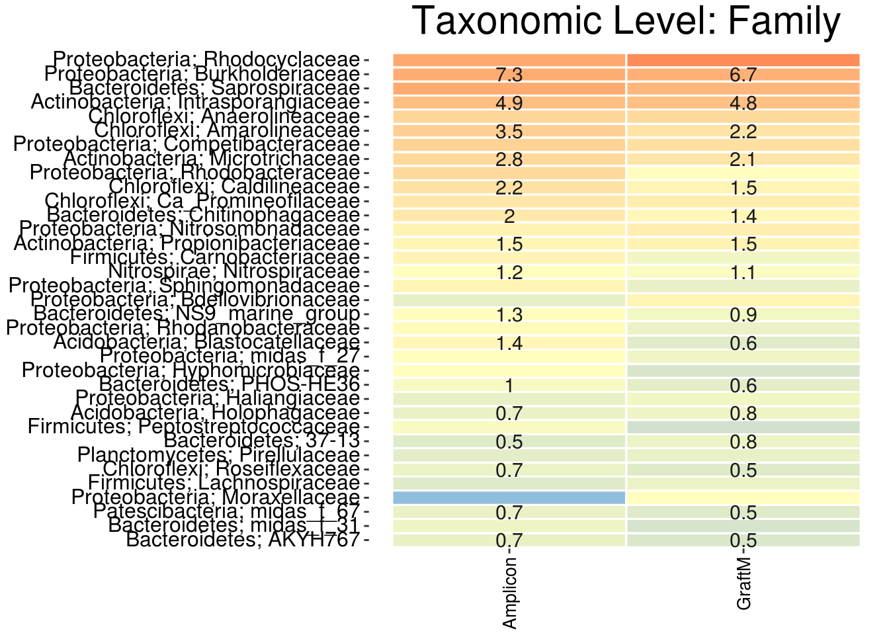
amp_heatmap(data_ampvis, group_by = "Classifier", tax_aggregate = "Class", tax_empty = "remove", tax_show = 35, tax_add = "Phylum") +
labs(title = "Taxonomic Level: Class") +
theme(plot.title = element_text(size = 22, hjust = 0.5))## Warning: Transformation introduced infinite values in discrete y-axis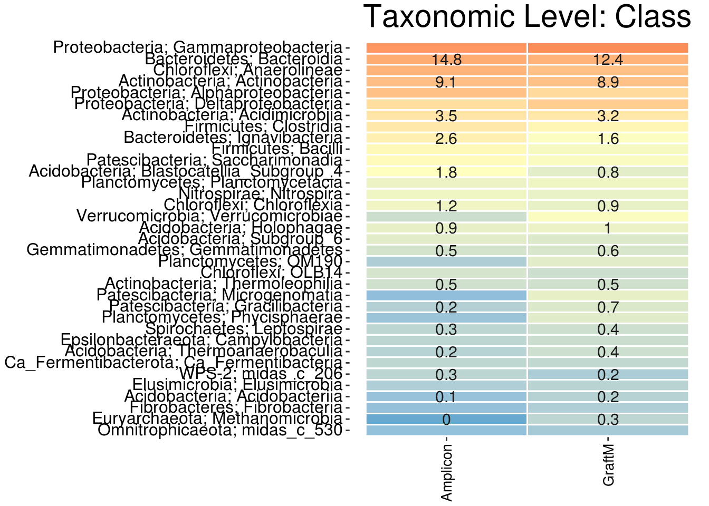
amp_heatmap(data_ampvis, group_by = "Classifier", tax_aggregate = "Genus", tax_empty = "remove", tax_show = 35, tax_add = "Phylum") +
labs(title = "Taxonomic Level: Genus") +
theme(plot.title = element_text(size = 22, hjust = 0.5))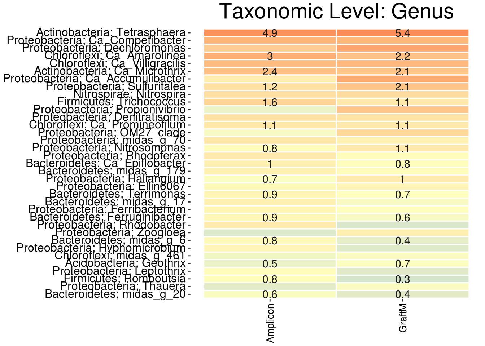
amp_heatmap(data_ampvis, group_by = "Classifier", tax_aggregate = "Species", tax_empty = "remove", tax_show = 35, tax_add = "Phylum") +
labs(title = "Taxonomic Level: Species") +
theme(plot.title = element_text(size = 22, hjust = 0.5))## Warning: Transformation introduced infinite values in discrete y-axis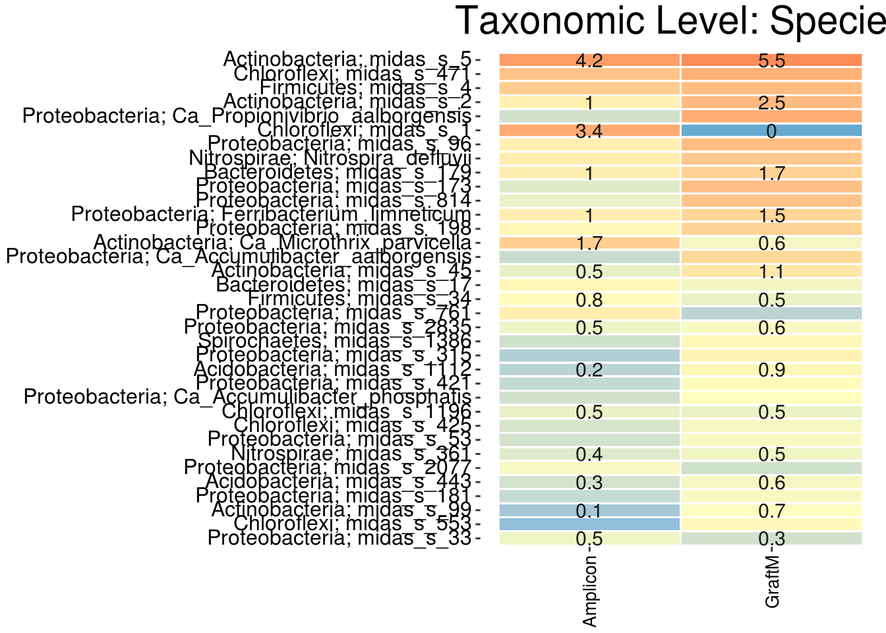
amp_octave(amplicon_ampvis) 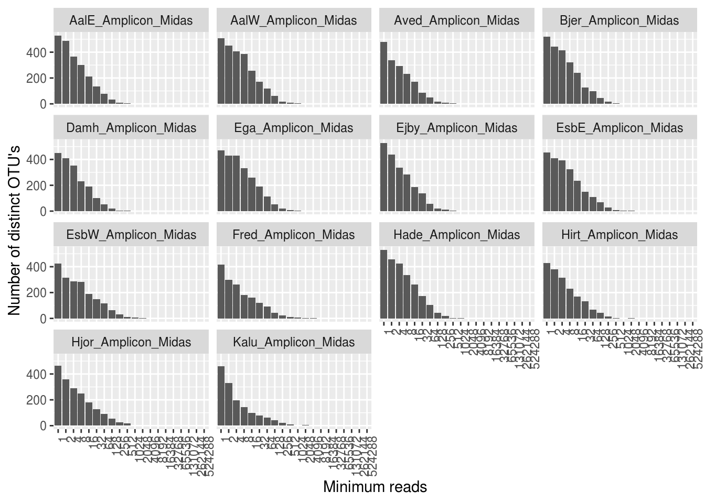
amp_octave(amplicon_ampvis_rarefied)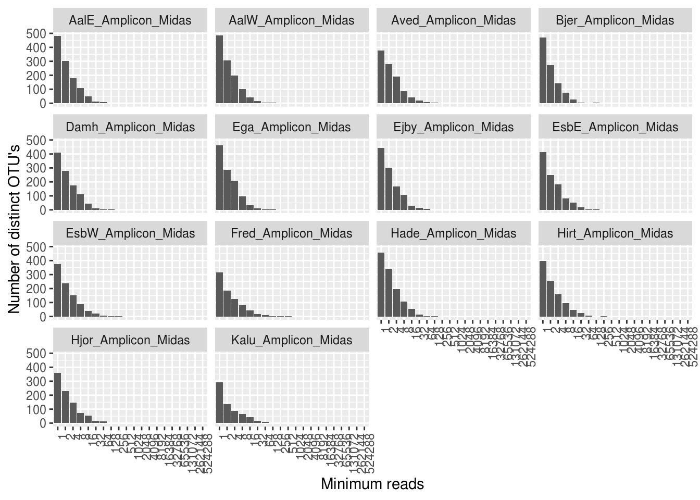
amp_octave(graftm_ampvis_rarefied)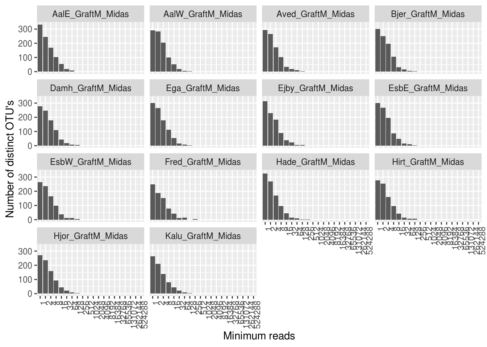
1.2 GraftM Silva vs Midas
amp_export_otutable(graftm_silva_rarefied, "/srv/MA/Projects/microflora_danica/analysis/projects/MFD_seges/results/WWTP_sequences/graftM/02_silva_combined_count/ampvis_otu/graftm_silva_otu_rarefied")
graftm_otu_silva_rarefied = read.csv("/srv/MA/Projects/microflora_danica/analysis/projects/MFD_seges/results/WWTP_sequences/graftM/02_silva_combined_count/ampvis_otu/graftm_silva_otu_rarefied.csv", sep = "\t")
graftm_silva_phylums = graftm_otu_silva_rarefied %>%
group_by(Phylum) %>%
count() %>%
arrange(desc(n))
graftm_silva_class = graftm_otu_silva_rarefied %>%
group_by(Class) %>%
count() %>%
arrange(desc(n))
graftm_silva_order = graftm_otu_silva_rarefied %>%
group_by(Order) %>%
count() %>%
arrange(desc(n))
graftm_silva_family = graftm_otu_silva_rarefied %>%
group_by(Family) %>%
count() %>%
arrange(desc(n))
graftm_silva_genus = graftm_otu_silva_rarefied %>%
group_by(Genus) %>%
count() %>%
arrange(desc(n))
graftm_silva_species = graftm_otu_silva_rarefied %>%
group_by(Species) %>%
count() %>%
arrange(desc(n))
graftm_silva_nrow = c(length(graftm_silva_phylums$n)-1, length(graftm_silva_class$n)-1, length(graftm_silva_order$n)-1, length(graftm_silva_family$n)-1, length(graftm_silva_genus$n)-1, length(graftm_silva_species$n)-1)
taxonomic_levels = c("Phylum","Class","Order","Family","Genus","Species")
graftm_silva_nrow_df = data.frame(taxonomic_levels, graftm_silva_nrow)
graftm_silva_nrow_df$taxonomic_levels = factor(graftm_nrow_df$taxonomic_levels, ordered = TRUE, levels = c("Phylum","Class","Order","Family","Genus","Species"))
graftm_silva_nrow_df_new = t(graftm_silva_nrow_df)
graftm_silva_nrow_df_new = as.data.frame(graftm_silva_nrow_df_new)
colnames(graftm_silva_nrow_df_new) = taxonomic_levels
graftm_silva_nrow_df_new = graftm_silva_nrow_df_new[-1,]
print(graftm_silva_nrow_df_new)## Phylum Class Order Family Genus Species
## graftm_silva_nrow 58 144 352 603 1162 1111graftm_silva_otu_rarefied_sum = graftm_otu_silva_rarefied %>% mutate(summed_reads = AalE_GraftM_Silva + AalW_GraftM_Silva + Aved_GraftM_Silva + Bjer_GraftM_Silva + Damh_GraftM_Silva + Ega_GraftM_Silva + Ejby_GraftM_Silva + EsbE_GraftM_Silva + EsbW_GraftM_Silva + Fred_GraftM_Silva + Hade_GraftM_Silva + Hirt_GraftM_Silva + Hjor_GraftM_Silva + Kalu_GraftM_Silva)
graftm_silva_phylum_sum = aggregate(graftm_silva_otu_rarefied_sum$summed_reads, by=list(Category=graftm_silva_otu_rarefied_sum$Phylum), FUN=sum)
graftm_silva_phylum_sum = graftm_silva_phylum_sum[-1,]
graftm_silva_class_sum = aggregate(graftm_silva_otu_rarefied_sum$summed_reads, by=list(Category=graftm_silva_otu_rarefied_sum$Class), FUN=sum)
graftm_silva_class_sum = graftm_silva_class_sum[-1,]
graftm_silva_order_sum = aggregate(graftm_silva_otu_rarefied_sum$summed_reads, by=list(Category=graftm_silva_otu_rarefied_sum$Order), FUN=sum)
graftm_silva_order_sum = graftm_silva_order_sum[-1,]
graftm_silva_family_sum = aggregate(graftm_silva_otu_rarefied_sum$summed_reads, by=list(Category=graftm_silva_otu_rarefied_sum$Family), FUN=sum)
graftm_silva_family_sum = graftm_silva_family_sum[-1,]
graftm_silva_genus_sum = aggregate(graftm_silva_otu_rarefied_sum$summed_reads, by=list(Category=graftm_silva_otu_rarefied_sum$Genus), FUN=sum)
graftm_silva_genus_sum = graftm_silva_genus_sum[-1,]
graftm_silva_species_sum = aggregate(graftm_silva_otu_rarefied_sum$summed_reads, by=list(Category=graftm_silva_otu_rarefied_sum$Species), FUN=sum)
graftm_silva_species_sum = graftm_silva_species_sum[-1,]
graftm_silva_normalized = c(sum(graftm_silva_phylum_sum$x)/sum(graftm_silva_otu_rarefied_sum$summed_reads), sum(graftm_silva_class_sum$x)/sum(graftm_silva_otu_rarefied_sum$summed_reads), sum(graftm_silva_order_sum$x)/sum(graftm_silva_otu_rarefied_sum$summed_reads), sum(graftm_silva_family_sum$x)/sum(graftm_silva_otu_rarefied_sum$summed_reads), sum(graftm_silva_genus_sum$x)/sum(graftm_silva_otu_rarefied_sum$summed_reads), sum(graftm_silva_species_sum$x)/sum(graftm_silva_otu_rarefied_sum$summed_reads))
print(graftm_silva_normalized)## [1] 0.9842378 0.9725245 0.9266743 0.8056288 0.5091069 0.1844409amp_heatmap(graftm_comp_ampvis_rarefied, group_by = "Database", tax_aggregate = "Family", tax_empty = "remove", tax_show = 35, tax_add = "Phylum") +
labs(title = "Taxonomic Level: Family") +
theme(plot.title = element_text(size = 22, hjust = 0.5))## Warning: Transformation introduced infinite values in discrete y-axis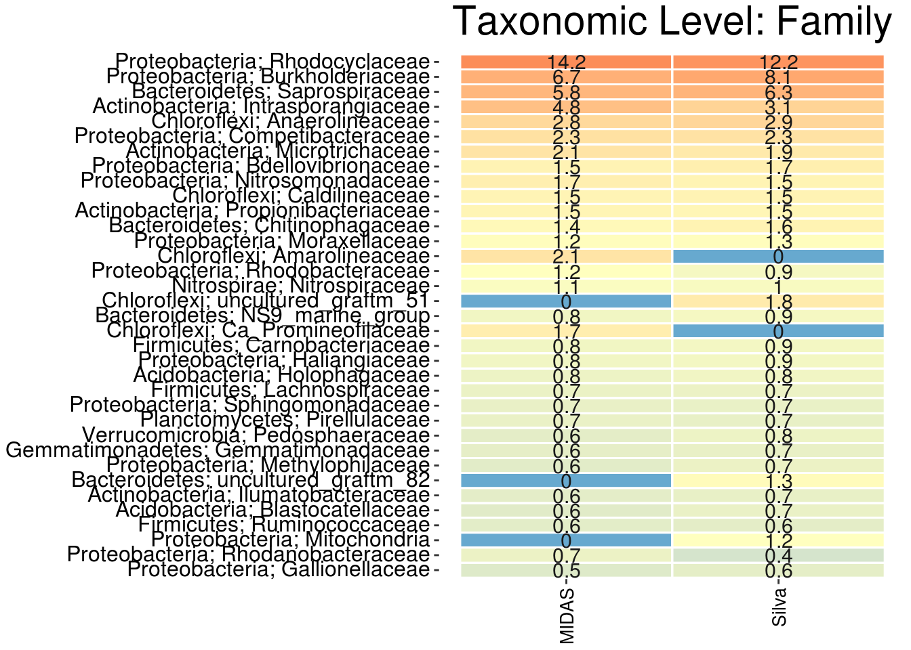
amp_heatmap(graftm_comp_ampvis_rarefied, group_by = "Database", tax_aggregate = "Class", tax_empty = "remove", tax_show = 35, tax_add = "Phylum") +
labs(title = "Taxonomic Level: Class") +
theme(plot.title = element_text(size = 22, hjust = 0.5))## Warning: Transformation introduced infinite values in discrete y-axis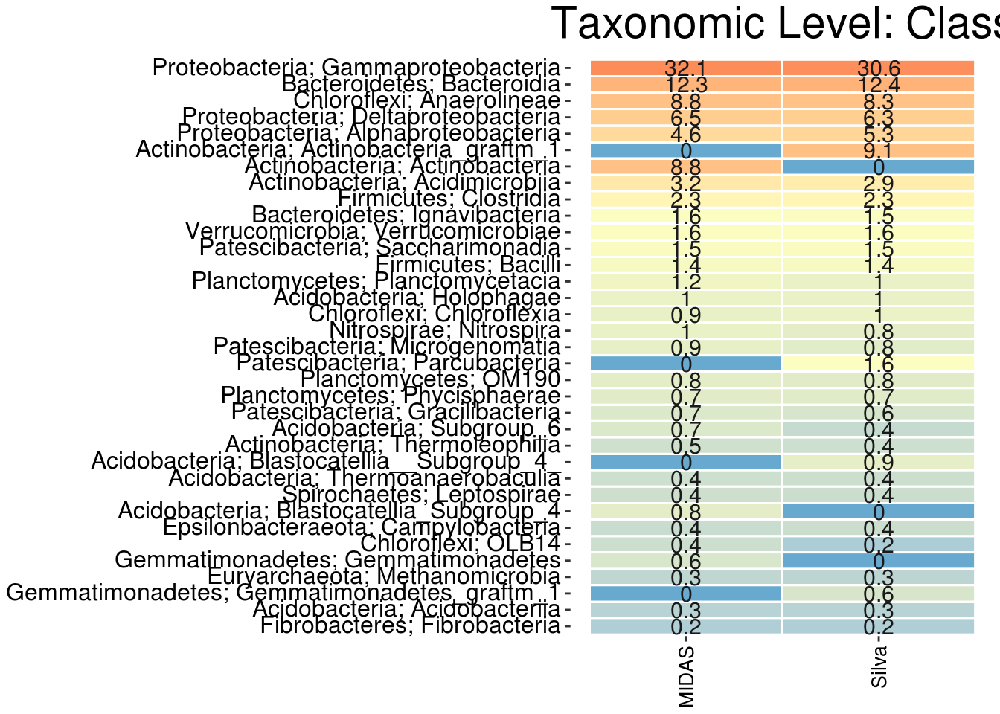
amp_heatmap(graftm_comp_ampvis_rarefied, group_by = "Database", tax_aggregate = "Genus", tax_empty = "remove", tax_show = 35, tax_add = "Phylum") +
labs(title = "Taxonomic Level: Genus") +
theme(plot.title = element_text(size = 22, hjust = 0.5))## Warning: Transformation introduced infinite values in discrete y-axis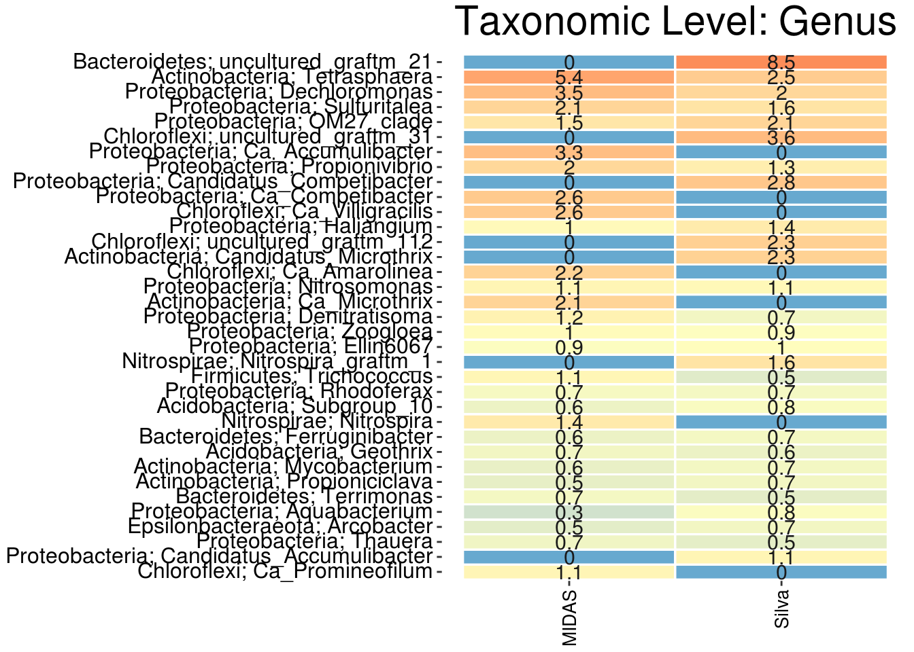
amp_heatmap(graftm_comp_ampvis_rarefied, group_by = "Database", tax_aggregate = "Species", tax_empty = "remove", tax_show = 35, tax_add = "Phylum") +
labs(title = "Taxonomic Level: Species") +
theme(plot.title = element_text(size = 22, hjust = 0.5))## Warning: Transformation introduced infinite values in discrete y-axis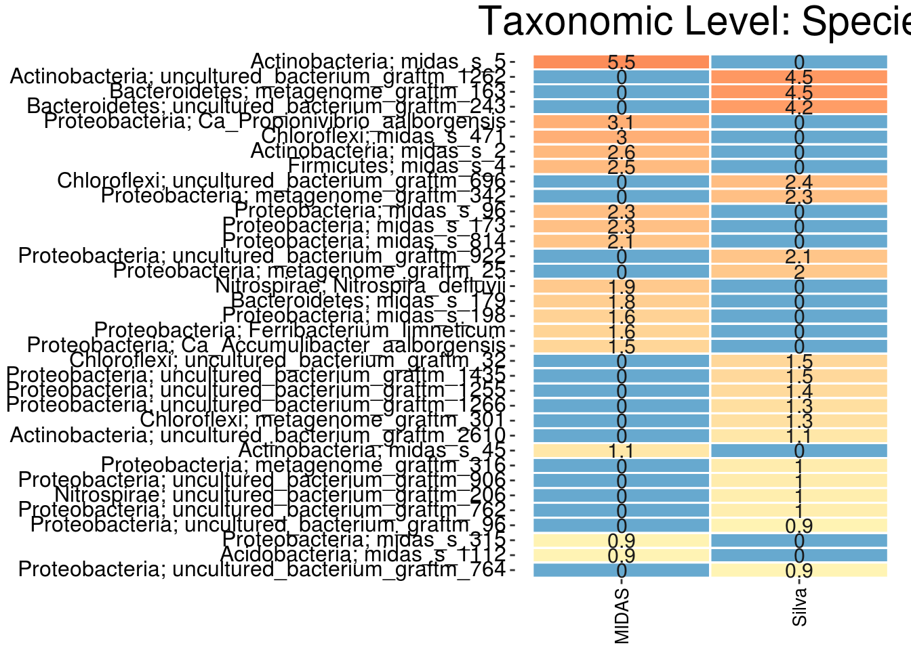